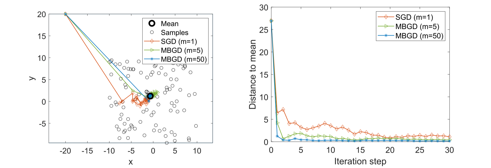

6.4-随机梯度下降
6.4 随机梯度下降¶
本节介绍随机梯度下降（SGD）算法，该算法在机器学习领域应用广泛。我们将证明SGD是RM算法的特例，而均值估计算法又是SGD算法的特例。
考虑如下优化问题：
其中 \(w\)为待优化参数，\(X\)为随机变量。期望值是对 \(X\)进行计算。此处\(w\)和\(X\)既可以是标量也可以是向量。函数\(f(\cdot)\)为标量函数。
求解式\((6.10)\)的直观方法是梯度下降法。具体而言，目标函数 \(E[f(w,X)]\)的梯度为\(\nabla_w E[f(w,X)] = E[\nabla_w f(w,X)]\)。相应的梯度下降算法可表示为
在诸如函数\(f\)的凸性等温和条件下，该梯度下降算法能够找到最优解 \(w^*\)。关于梯度下降算法的预备知识可参见附录D。
梯度下降算法需要期望值\(E[\nabla_w f(w_k,X)]\)。获取该期望值的一种方法是基于\(X\)的概率分布。然而，实际应用中该分布往往未知。另一种方法即批量梯度下降(batch gradient descent)是收集大量独立同分布样本 \(\{x_i\}_{i=1}^n\)来逼近期望值，其表达式为
则\((6.11)\)式变为
\((6.12)\)式中算法的一个问题在于：每次迭代都需要使用全部样本。实际应用中，若样本是逐个采集的，则更希望在每次获得新样本时立即更新\(w\)。为此，可采用如下算法即随机梯度下降(stochastic gradient descent)：
其中\(x_k\)为时间步\(k\)采集的样本。这是经典的随机梯度下降算法。该算法被称为"随机"的原因是它依赖于随机样本集 \(\{x_k\}\)。
相较于\((6.11)\)中的梯度下降算法，SGD将真实梯度\(E[\nabla_w f(w,X)]\)替换为随机梯度\(\nabla_w f(w_k, x_k)\)。由于\(\nabla_w f(w_k, x_k) \neq E[\nabla_w f(w,X)]\)，这种替换是否仍能保证当\(k \to \infty\)时\(w_k \to w^*\)？答案是肯定的。我们接下来给出直观解释，并将收敛性的严格证明推迟至6.4.5节。
Note
这里可以将SGD与GD和BGD对比一下。
特别地，由于
式\((6.13)\)中的 SGD算法可改写为
因此，SGD算法与常规梯度下降算法相同，唯一的区别在于其含有一个扰动项\(\alpha_k\eta_k\)。由于\(\{x_k\}\)是独立同分布序列，我们有\(\mathbb{E}_{x_k}[\nabla_w f(w_k, x_k)] = \mathbb{E}_X[\nabla_w f(w_k,X)]\)。由此可得，
因此，扰动项 \(\eta_k\)的均值为零，这直观表明它可能不会破坏收敛性。关于随机梯度下降(SGD)方法的收敛性严格证明详见第\(6.4.5\)节。
6.4.1 应用于期望估计¶
接下来，我们应用随机梯度下降(SGD)来分析均值估计问题，并证明式\((6.4)\)中的均值估计算法是一种特殊的SGD算法。为此，我们将均值估计问题表述为如下优化问题：
其中 \(f(w,X) = \|w - X\|^2/2\)且梯度为 \(\nabla_w f(w,X) = w - X\)。通过求解 \(\nabla_w J(w) =0\)可验证最优解为 \(w^* = \mathbb{E}[X]\)。因此，该优化问题等价于均值估计问题。
Note
\(\nabla_w J(w) =0\)\(\rightarrow\)\(\mathbb{E}[\nabla_w f(w,X)]=0\)\(\rightarrow\)\(\mathbb{E}[w-X]=0\)\(\rightarrow\)\(w^*=\mathbb{E}[X]\)
-
求解式\((6.14)\)的梯度下降算法为
\[\begin{aligned}w_{k+1}&=w_k-\alpha_k\nabla_wJ(w_k)\\&=w_k-\alpha_k\mathbb{E}[\nabla_wf(w_k,X)]\\&=w_k-\alpha_k\mathbb{E}[w_k-X]\end{aligned}\]该梯度下降算法不可行，因为等式右侧的 \(E[w_k - X]\)或 \(E[X]\)未知（实际上这正是我们需要求解的项）。
-
求解式\((6.14)\)的 SGD算法为
\[w_{k+1}=w_k-\alpha_k\nabla_wf(w_k,x_k)=w_k-\alpha_k(w_k-x_k)\]其中\(x_k\)为时间步\(k\)处获取的样本。值得注意的是，该随机梯度下降(SGD)算法与式\((6.4)\)中的迭代均值估计算法完全一致。因此，\((6.4)\)式是专门为解决均值估计问题设计的随机梯度下降算法。
6.4.2 随机梯度下降的收敛形式¶
SGD算法的核心思想是用随机梯度替代真实梯度。然而，由于随机梯度的随机性，人们可能会质疑SGD的收敛速度是否较慢或不稳定。但幸运的是，SGD通常能实现高效收敛。一个有趣的收敛模式是：当估计值\(w_k\)远离最优解\(w^*\)时，其表现与常规梯度下降算法相似；只有当\(w_k\)接近\(w^*\)时，SGD的收敛过程才会表现出更强的随机性。
Note
\(\nabla_wf(w_k,x_k)\)可以看作是\(\mathbb{E}[\nabla_wf(w,X)]\)的噪声测量值。
下文将分析该模式并给出示例说明。
-
分析：随机梯度与真实梯度之间的相对误差(relative error)为
\[\delta_k\doteq\frac{|\nabla_wf(w_k,x_k)-\mathbb{E}[\nabla_wf(w_k,X)]|}{|\mathbb{E}[\nabla_wf(w_k,X)]|}.\]为简化分析，我们考虑 \(w\)和 \(\nabla_w f(w, x)\)均为标量的情形。由于 \(w^*\)是最优解，故有 \(\mathbb{E}[\nabla_w f(w^*,X)] =0\)。此时，相对误差可改写为
\[\delta_k=\frac{|\nabla_wf(w_k,x_k)-\mathbb{E}[\nabla_wf(w_k,X)]|}{|\mathbb{E}[\nabla_wf(w_k,X)]-\mathbb{E}[\nabla_wf(w^*,X)]|}=\frac{|\nabla_wf(w_k,x_k)-\mathbb{E}[\nabla_wf(w_k,X)]|}{|\mathbb{E}[\nabla_w^2f(\tilde{w}_k,X)(w_k-w^*)]|},\tag{6.15}\]其中最后一个等式由中值定理[7,8]得出，且 \(\tilde{w}_k \in [w_k, w^*]\)。假设 \(f\)是严格凸函数，使得对所有 \(w,X\)均有 \(\nabla^2_w f \geq c >0\)。此时，(6.15)式中的分母可表示为
\[\begin{aligned}\left|\mathbb{E}[\nabla_{w}^{2}f(\tilde{w}_{k},X)(w_{k}-w^{*})]\right|&=\left|\mathbb{E}[\nabla_{w}^{2}f(\tilde{w}_{k},X)]\right|\left|(w_{k}-w^{*})\right|\\&\geq c|w_{k}-w^{*}|.\end{aligned}\]将上述不等式代入式\((6.15)\)可得
\[\delta_k\leq\frac{\mid\overbrace{\nabla_wf(w_k,x_k)}^\text{stochastic gradient}-\overbrace{\mathbb{E}[\nabla_wf(w_k,X)]}^\text{true gradient}\mid}{\underbrace{c|w_k-w^*|}_{\text{distance to the optimal solution}}}.\]上述不等式揭示了随机梯度下降(SGD)一个有趣的收敛模式：相对误差 \(\delta_k\)与 \(|w_k - w^*|\)成反比。因此，当 \(|w_k - w^*|\)较大时，\(\delta_k\)较小。此时SGD算法的表现类似于梯度下降算法，因而 \(w_k\)会快速收敛至 \(w^*\)。而当 \(w_k\)接近 \(w^*\)时，相对误差 \(\delta_k\)可能增大，收敛过程会表现出更强的随机性。
-
例子: 均值估计问题是展示上述分析的典型案例。考虑\((6.14)\)中的均值估计问题，当\(w\)和\(X\)均为标量时，有\(f(w,X) = |w -X|^2/2\)，因此
\[\begin{aligned}\nabla_{w}f(w,x_{k})&=w-x_{k},\\\mathbb{E}[\nabla_wf(w,x_k)]&=w-\mathbb{E}[X]=w-w^{*}.\end{aligned}\]因此，相对误差为
\[\delta_k=\frac{|\nabla_wf(w_k,x_k)-\mathbb{E}[\nabla_wf(w_k,X)]|}{|\mathbb{E}[\nabla_wf(w_k,X)]|}=\frac{|(w_k-x_k)-(w_k-\mathbb{E}[X])|}{|w_k-w^*|}=\frac{|\mathbb{E}[X]-x_k|}{|w_k-w^*|}.\]
图\(6.5\)：演示随机梯度下降与小批量梯度下降算法的示例。二维随机变量 \(X \in \mathbb{R}^2\)服从边长为20、原点为中心的正方形区域均匀分布，其均值满足 \(\mathbb{E}[X] =0\)。均值估计基于100个独立同分布样本。
Note
通过图\(6.5\)也可以发现，SGD在收敛过程中，初始时刻并没有展现出随机性，而当靠近目标值时，展现出了一定的随机性，这与我们分析是一致的。
相对误差的表达式清楚地表明,\(\delta_k\)与\(|w_k - w^*|\)成反比。因此，当\(w_k\)远离\(w^*\)时，相对误差较小，SGD 的行为类似于梯度下降。另外，由于\(\delta_k\)与\(|\mathbb{E}[X] - x_k|\)成正比， \(\delta_k\)的均值与\(X\)的方差成正比。
仿真结果如图\(6.5\)所示。其中，\(X \in \mathbb{R}^2\)表示平面内的随机位置，其分布在以原点为中心的正方形区域内均匀分布且满足 \(\mathbb{E}[X] =0\)。均值估计基于100个独立同分布样本。尽管均值初始猜测值远离真实值，但可以看出SGD估计量迅速逼近原点邻域。当估计值接近原点时，收敛过程呈现出一定的随机性。
6.4.3 随机梯度下降的另一种描述¶
\((6.13)\)式中的随机梯度下降(SGD)表述涉及随机变量。研究者也常采用不包含随机变量的确定性SGD(deterministic formulation)。
特别地，考虑一组实数 \(\{x_i\}_{i=1}^n\)，其中 \(x_i\)是任何随机变量的样本。待求解的优化问题是最小化平均值：
其中 \(f(w, x_i)\)为参数化函数，\(w\)为待优化参数。求解该问题的梯度下降算法为
假设集合 \(\{x_i\}_{i=1}^n\)规模较大且每次仅能获取单个数值。在此情况下，采用增量方式更新 \(w_k\)更为适宜：
需特别注意，此处的\(x_k\)表示时间步 \(k\)所获取的数值，而非集合 \(\{x_i\}_{i=1}^n\)中的第 \(k\)个元素。
\((6.16)\)中的算法与随机梯度下降法(SGD)非常相似，但其问题表述存在微妙差异，因为它不涉及任何随机变量或期望值。这引发了许多问题，
-
算法是否属于SGD?
-
我们应如何使用有限的数值集合 \(\{x_i\}_{i=1}^n\)？
-
是否需要按特定顺序排列这些数值后逐个使用，还是应该从集合中随机采样？
针对上述问题的快速解答是：尽管原公式中未涉及随机变量，但通过引入随机变量可将确定性公式转化为随机性公式。具体而言，设\(X\)为定义在集合\(\{x_i\}_{i=1}^n\)上的随机变量，其概率分布服从均匀分布，即\(p(X = x_i) =1/n\)。此时，确定性优化问题即转化为随机优化问题：
上式最后一个等式是严格成立而非近似成立的。因此，(6.16)中的算法属于随机梯度下降法(SGD)，当\(x_k\)从\(\{x_i\}_{i=1}^n\)中均匀且独立采样时，估计值收敛。需要注意的是，由于随机采样的特性，\(x_k\)可能会重复选取\(\{x_i\}_{i=1}^n\)中的相同数值。
6.4.4 小批量梯度下降¶
虽然随机梯度下降法（SGD）在每次迭代中仅使用单个样本，接下来我们将介绍小批量梯度下降法（MBGD），该方法在每次迭代中使用稍多样本。当每次迭代使用全部样本时，该算法称为批量梯度下降法（BGD）。
特别地，假设我们希望找到能够最小化目标函数 \(J(w) = E[f(w,X)]\)的最优解，其中给定随机变量 \(X\)的一组样本 \(\{x_i\}_{i=1}^n\)。用于求解该问题的批量梯度下降（BGD）、随机梯度下降（SGD）和小批量梯度下降（MBGD）算法分别为：
在BGD算法中，每次迭代都会使用所有样本。当样本量\(n\)较大时，\((1/n)\sum_{i=1}^n \nabla_w f(w_k, x_i)\)会接近真实梯度\(\mathbb{E}[\nabla_w f(w_k,X)]\)。而在MBGD算法中，\(\mathcal{I}_{k}\)是时间步 \(k\)时从集合 \(\{1, \ldots, n\}\)中采样的子集，其大小为 \(|\mathcal{I}_{k}| = m\)。假设 \(\mathcal{I}_{k}\)中的样本同样满足独立同分布条件。在随机梯度下降算法中，\(x_k\)表示时间步 \(k\)时从样本集 \(\{x_i\}_{i=1}^n\)中随机抽取的样本。
MBGD可视为SGD与BGD之间的折中方案。相较于SGD，MBGD通过采用更多样本（而非SGD的单一样本）降低了随机性；而与BGD相比，MBGD无需在每次迭代中使用全部样本，因而更具灵活性。当\(m=1\)时，MBGD退化为SGD；但当\(m=n\)时，MBGD并不等同于BGD——这是因为MBGD随机抽取的\(n\)个样本可能存在重复，未必能覆盖\(\{x_i\}_{i=1}^n\)中的所有数据，而BGD则严格使用全部\(n\)个样本。
一般而言，MBGD的收敛速度比SGD更快。这是因为SGD采用\(\nabla_w f(w_k, x_k)\)来近似真实梯度，而MBGD使用\((1/m) \sum_{j \in I_k} \nabla_w f(w_k, x_j)\)——由于随机性被平均抵消，该估计更接近真实梯度。MBGD算法的收敛性证明方法与SGD情形类似。
均值估计问题是展示上述分析的典型案例。具体而言，给定一组数值 \(\{x_i\}_{i=1}^n\)，我们的目标是计算均值 \(\bar{x} = \sum_{i=1}^n x_i/n\)。该问题可等价表述为以下优化问题：
其最优解为 \(w^* = \bar{x}\)。求解该问题的三种算法分别为：
其中 \(\bar{x}^{(m)}_k = \sum_{j\in I_k} x_j/m\)。此外，若 \(\alpha_k =1/k\)，上述方程组可通过如下公式解得：
上述方程的推导过程与式（6.3）类似，此处从略。可以看出，BGD在每一步给出的估计值恰好是最优解 \(w^* = \bar{x}\)。由于 \(\bar{x}^{(m)}_k\)本身是均值，MBGD比 SGD更快收敛到均值。
图6.5给出了一个仿真示例以验证MBGD的收敛性。设步长参数 \(\alpha_k =1/k\)，结果表明：采用不同小批量尺寸的MBGD算法均能收敛至均值。其中 \(m=50\)的案例收敛最快，而采用 \(m=1\)的随机梯度下降法(SGD)收敛最慢，这与前文分析一致。值得注意的是，当参数向量 \(\mathbf{w}_k\)远离最优解 \(\mathbf{w}^*\)时，SGD仍能保持较快的收敛速度。
6.4.5 随机梯度下降的收敛性¶
随机梯度下降（SGD）的收敛性严格证明如下。
Info
定理6.4. (随机梯度下降法的收敛性)。对于式\((6.13)\)中的SGD算法，若满足以下条件，则 \(w_k\)几乎必然收敛至 \(\nabla_w E[f(w,X)] =0\)的根。
定理\(6.4\)中的三个条件将在下文中讨论。
-
条件(a)涉及函数 \(f\)的凸性，要求其曲率在上下界范围内约束。此处 \(w\)为标量，\(\nabla^2_w f(w,X)\)亦然。该条件可推广至向量情形：当 \(w\)为向量时，\(\nabla^2_w f(w,X)\)即为著名的Hessian矩阵。
-
条件(b)与RM算法类似。实际上，SGD算法是RM算法的一个特例（如方框6.1中的证明所示）。实践中，\(a_k\)通常被选为足够小的常数。虽然此时条件(b)不满足，但算法仍能在某种意义下收敛[24,第1.5节]。
-
条件©是一个常见要求。
具体证明详见Box 6.1。